For each lab we cover the full description, learning objectives, steps, required tools, expected results, and the challenges we ran into along the way.
DigiBank is a fictional digital banking application built across four progressive DevSecOps workshops. Each one adds a new layer of security analysis to the same codebase, following the "Shift Left" philosophy — moving security earlier and earlier in the software lifecycle.
| Lab | Security layer | Question it answers |
|---|---|---|
| Lab 1 | Secure design & implementation | Can we build a clean, testable, containerized base? |
| Lab 2 | SAST — static | Is the source code secure? |
| Lab 3 | DAST — dynamic | Is the running application secure? |
| Lab 4 | Containers & dependencies | Is what we import, package, and ship secure? |
A realistic banking surface, deliberately small enough to analyze deeply across all four labs.
| Area | Technology |
|---|---|
| Language | Java 17 |
| Build tool | Maven (multi‑module) |
| Framework | Spring Boot 3.5 |
| Persistence | Spring Data JPA + PostgreSQL (dev) / H2 (tests) |
| DB migrations | Flyway |
| API docs | Springdoc OpenAPI / Swagger UI |
| Unit tests | JUnit 5 + Mockito |
| Integration tests | Cucumber (BDD) |
| Containerization | Docker + Docker Compose |
| CI/CD | GitHub Actions |
It's a continuous, integrated property of the software lifecycle. Each lab layers a new security control onto the same codebase — the "Shift Left" idea in practice.
Design + build
Static (SAST)
Dynamic (DAST)
Supply chain
Re‑checks everything
The same ten‑stage delivery lifecycle carries a security control at each step.
Commit & version control
Compile & create artifacts
Unit, integration, functional
Find vulnerabilities in code
Known CVEs in libraries
Image vulnerabilities
To staging or production
Test the running app
Detect & respond
Lab 1 is the foundation — the first executable version of DigiBank as a modular monolith: a single Spring Boot app split into clean Maven modules by business domain. The goal is a solid, stable, documented, testable base that later workshops build on without reconstruction.
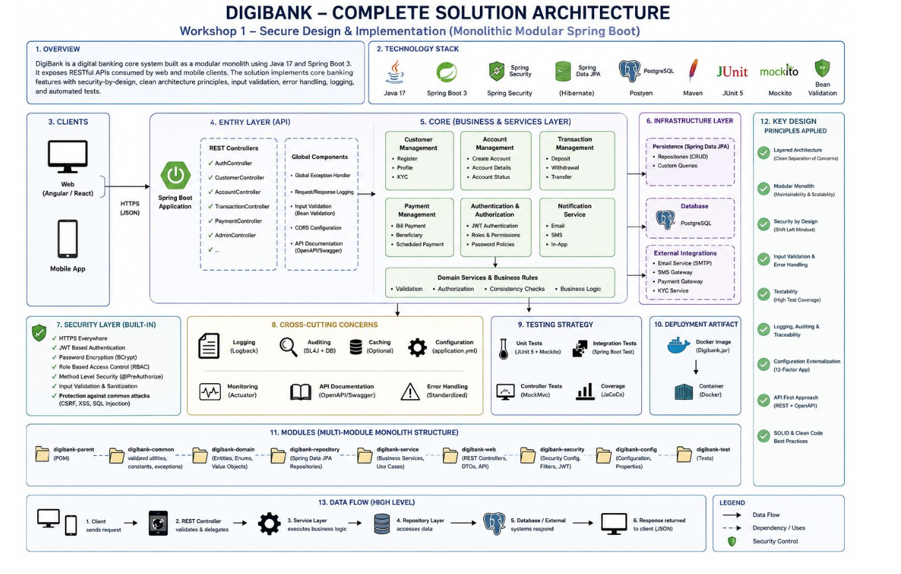
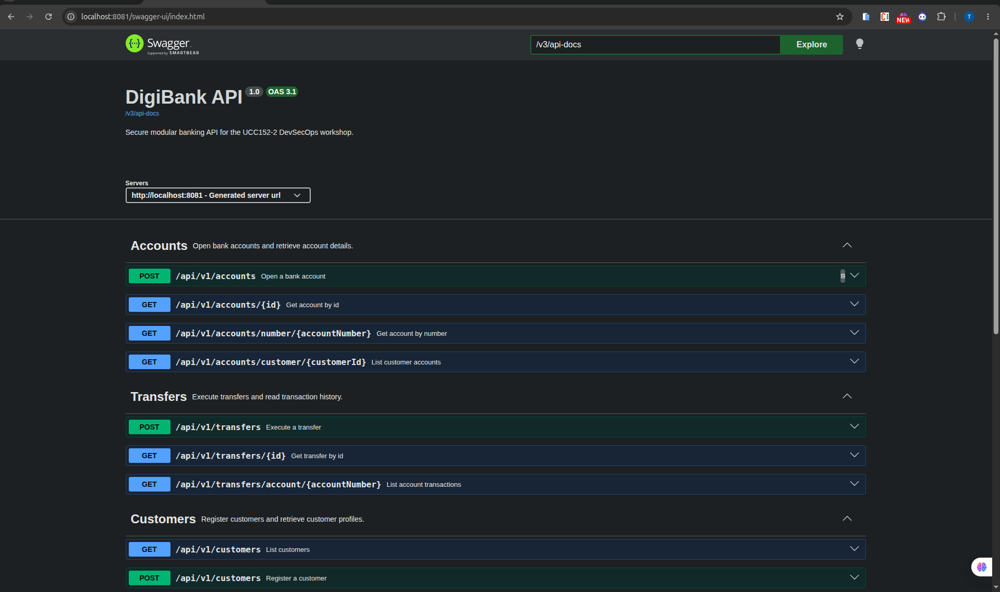
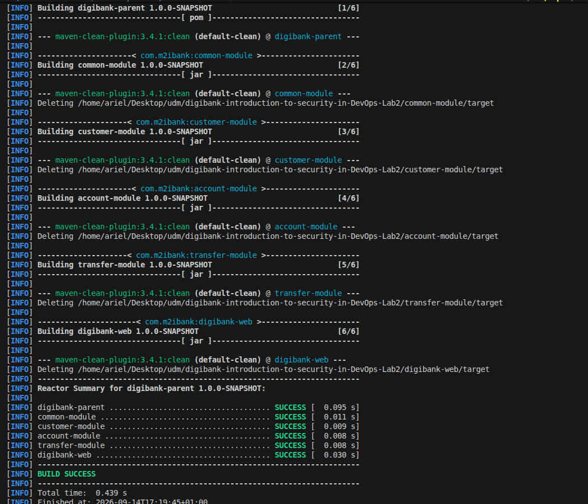
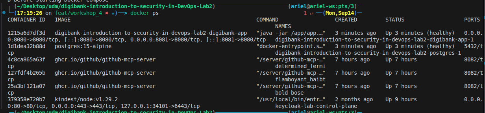
Parent Maven POM with Java 17 and Spring Boot 3.5, then five modules: common, customer, account, transfer, digibank‑web.
Entities, repositories, services, controllers, DTOs, and exceptions for each module — including duplicate protection, server‑generated account numbers, and transactional transfers.
A GlobalExceptionHandler returns consistent ApiResponse envelopes without leaking stack traces.
Flyway migrations create schema and demo data; PostgreSQL for dev/container, H2 for tests.
A static homepage plus Springdoc OpenAPI / Swagger UI.
JUnit 5 + Mockito unit tests per module, plus Cucumber BDD scenarios for the transfer workflow.
Multi‑stage Dockerfile and docker‑compose.yml running PostgreSQL + the app with health checks.
GitHub Actions workflow for Maven verification, plus READMEs and architecture docs.
Keeping domain boundaries clean in one runtime
Modular monolith: each domain is a Maven module; only digibank‑web assembles them
Consistent, safe error responses
Centralized GlobalExceptionHandler returning a uniform ApiResponse envelope
Schema drift between entities and DB
Flyway owns migrations; Hibernate ddl‑auto set to validate so drift fails fast
Testing without a local PostgreSQL
H2 in PostgreSQL‑compatibility mode for the test profile
Reproducible local environment
Docker Compose with health checks and environment‑driven configuration
Lab 2 applies SAST to DigiBank's source code, bytecode, configuration, and Maven dependencies — without running the app. It detects, prioritizes, remediates, and verifies weaknesses, following Shift Left.
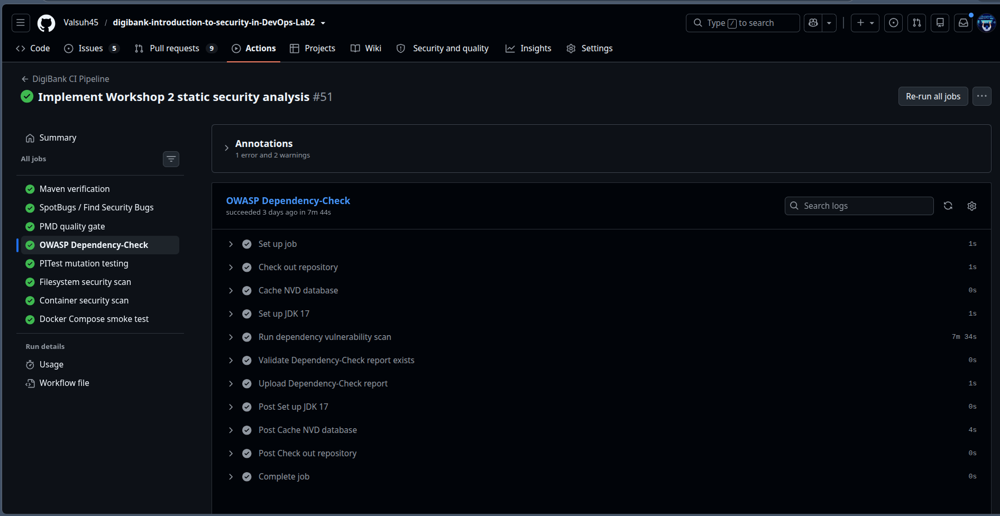
Configured analysis tools in the parent POM — SonarQube scanner, OWASP Dependency‑Check, PITest, Surefire.
Examined weak input validation, sensitive data exposure in DTOs, excessive error detail, secrets in configuration, dependency CVEs, and test gaps on critical rules.
Fixed each identified weakness — see the remediations slide.
Reran the build, tests, and analysis tools to confirm the improvements held.
SonarQube not reachable from a hosted GitHub runner
Runs locally/externally; CI runs the other gates instead
Transitive Spring CVEs with no safe newer patch
Time‑bounded suppressions, kept visible in reports
Mutation testing revealed weak coverage on critical rules
Added explicit tests for debit/transfer edge cases
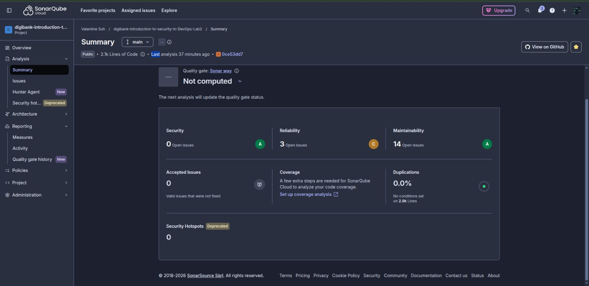
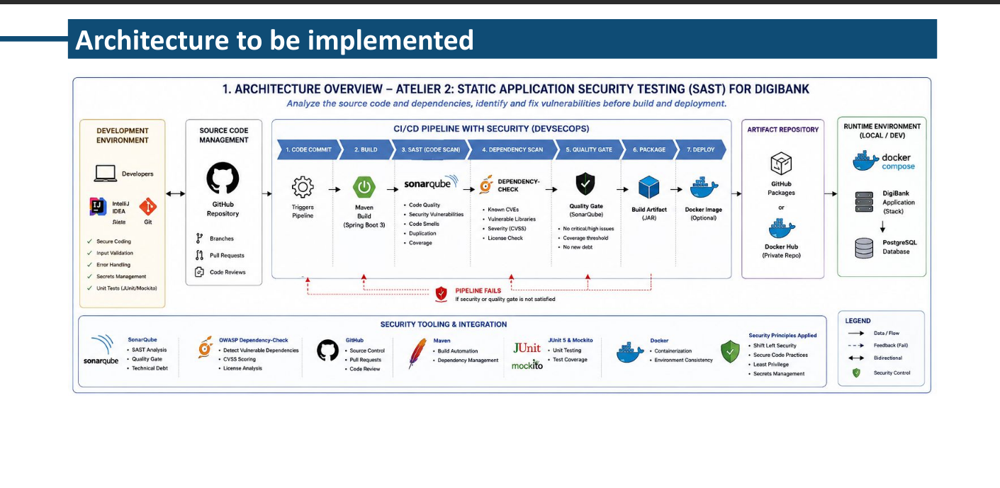
Lab 3 observes the running application from the outside, like an attacker, by sending real HTTP requests. It confirms at runtime which weaknesses are actually observable and exploitable.
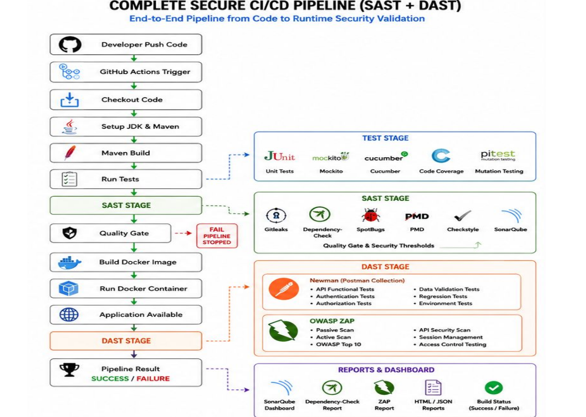
Start DigiBank + PostgreSQL, map the API with Swagger/curl.
Functional, input‑validation, error‑handling, information‑exposure, and remediation checks in Postman.
Baseline scan to compare the visible surface before and after remediation.
Confirmed dynamic vulnerabilities (next slide), then fixed them.
Replay the Postman collection with Newman, rerun ZAP, and add a DAST CI pipeline.
| # | Observed weakness | Remediation |
|---|---|---|
| 1 | Error responses echoed the requested id and business state, enabling enumeration | Handler returns generic messages; real reason logged server‑side |
| 2 | Not‑found message embedded the raw identifier | Message made generic — no identifier in public text |
| 3 | Duplicate creation revealed whether an email/identity already existed | Combined into a single generic message |
| # | Observed weakness | Remediation |
|---|---|---|
| 4 | Identity number had no structural constraint | Added a strict pattern constraint on the field |
| 5 | Interactive API documentation exposed in every profile | Dev keeps Swagger enabled; prod and ci disable it |
| 6 | Customer responses reviewed for over‑exposure | Confirmed the identity number stays out of the response DTO |
Already‑defensive areas were verified rather than changed: transfer amount validation, null/zero/same‑account rejection, and negative‑balance rejection.
Making dynamic tests reproducible
Versioned Postman collection + Newman CLI with HTML/JSON reports
ZAP scans can be noisy and slow
ZAP runs as a non‑blocking observation job; Newman is the blocking gate
Fresh database needed per run
Collection creates its own data; re‑run on a clean DB
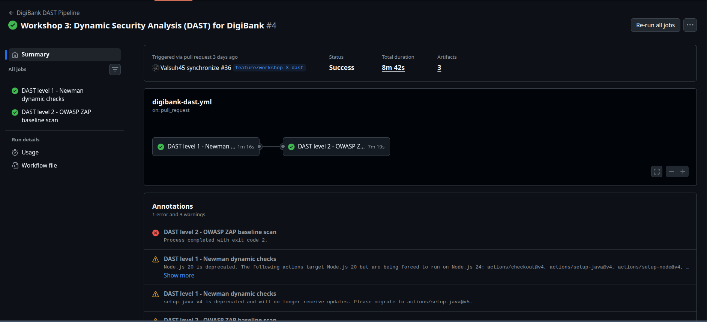
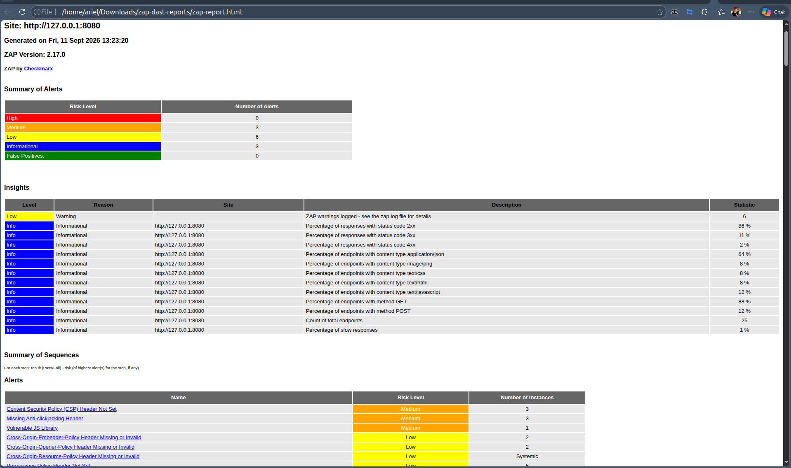
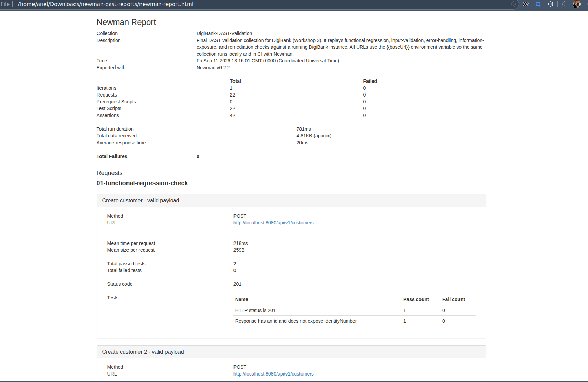
Lab 4 shifts focus to the software supply chain — third‑party libraries, the Docker image, configuration, and the CI/CD pipeline. It detects, analyzes, prioritizes, remediates, and automates container and dependency risks.
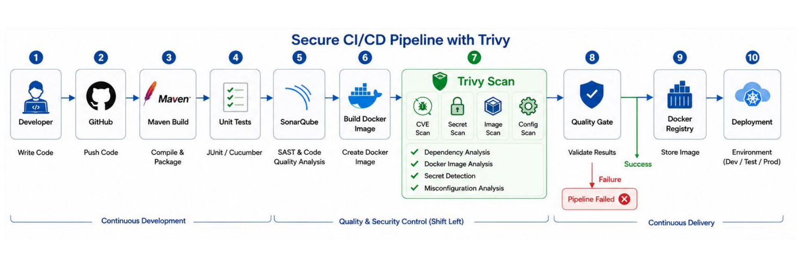
Verify the build, Dockerfile, .dockerignore, docker‑compose.yml, and parent POM.
Review Maven dependencies, the Dockerfile/image (size, layers, base image), secrets, and privileges.
Apply the fixes — see the remediations slide.
Add the container & dependency security pipeline.
Rerun build, tests, Dependency‑Check, Docker build, and Trivy.
Dependency‑Check slow without an NVD API key
A free NVD API key (GitHub secret) speeds up the NVD download
Reducing image attack surface
Multi‑stage build + Alpine runtime + non‑root user + .dockerignore
Swagger leaking in production
Environment‑gated profiles — dev on, prod/ci off
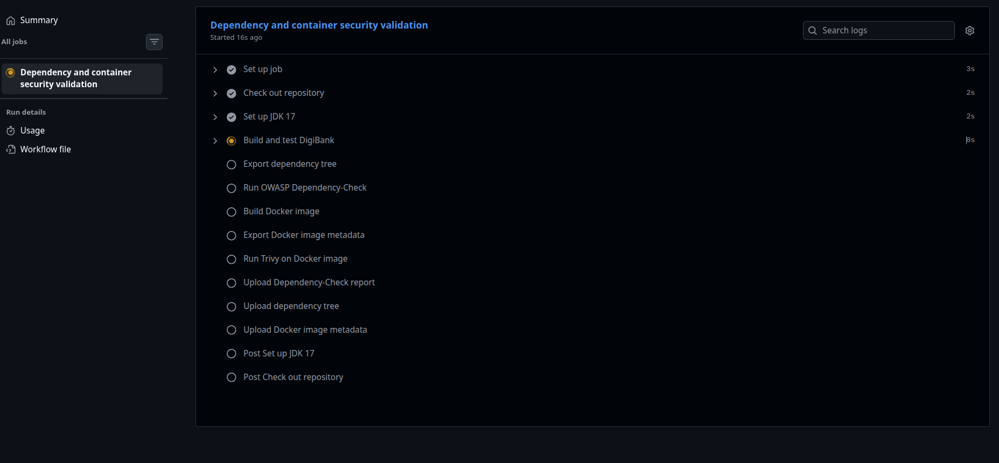
| Workflow | Purpose | Key gates |
|---|---|---|
| ci.yml | Core CI | Maven verify, SpotBugs, PMD, Dependency‑Check, PITest, Trivy, Compose smoke test |
| digibank‑dast.yml | Lab 3 DAST | Newman (blocking) + OWASP ZAP baseline (observation) |
| digibank‑security‑pipeline.yml | Lab 4 container/deps | Dependency‑Check + Docker build + Trivy image scan + artifact publishing |
Dependabot monitors Maven and GitHub Actions dependencies weekly, keeping the supply chain up‑to‑date.
| Job | What it does |
|---|---|
| verify | mvn -B clean verify — build, unit, integration, and Cucumber tests |
| static-analysis | SpotBugs + Find Security Bugs, uploads reports |
| pmd | Aggregate PMD quality gate, zero violations, uploads reports |
| dependency-analysis | OWASP Dependency‑Check with a CVSS ≥ 7 gate |
| mutation-testing | PITest mutation coverage, uploads reports |
| filesystem-security-scan | Trivy filesystem scan — vulnerabilities, secrets, misconfig |
| container-security-scan | Build image, then Trivy image scan |
| compose-smoke-test | Docker Compose up, health check, transfer workflow check |
Level 1 — Newman (blocking): starts PostgreSQL + DigiBank, replays the DAST Postman collection, uploads reports.
Level 2 — ZAP (observation): runs the stack via Compose and launches a ZAP baseline scan — non‑blocking evidence.
Build and test DigiBank
Export the dependency tree
Run OWASP Dependency‑Check
Build image, run Trivy, publish artifacts
Coordinating four progressive workshops on one codebase
Modular monolith with clear per‑lab evidence docs and CI workflows
Avoiding regressions while hardening
Every remediation followed by a full build and focused tests
Reproducible security evidence
Versioned collections, scan reports, scripts, and CI artifacts
Balancing security with build speed
Heavy scanners run in dedicated CI jobs, not every local build
Cross‑cutting challenges we faced while industrializing security across all four labs.
Ideas to push the pipeline further — including AI‑driven security.
Across the four labs, DigiBank progressed from a clean, testable modular monolith to a system whose source code, runtime behavior, and supply chain are all analyzed, hardened, and automated — the full DevSecOps / Shift Left philosophy in practice.
A secure application is not just well‑written code. It is code that is statically and dynamically validated, built from trusted dependencies, shipped in a hardened container, and continuously re‑checked by an automated pipeline.